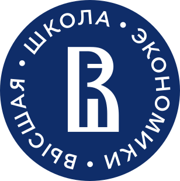

Города, в которых есть ВШЭ
- Москва
- Санкт-Петербург
- Нижний Новгород
- Пермь
Основатели ВШЭ
- Ярослав Иванович Кузьминов
- Евгений Григорьевич Ясин
- Рустем Махмутович Нуреев
- Револьд Михайлович Энтов
- Олег Ананьин
Интересные факты
- История
- ВШЭ была основана в 1992 году.
- Она стала одним из ведущих учебных заведений в России.
- Кампусы
- ВШЭ имеет несколько кампусов в Москве, включая Шаболовку, Мясницкую улицу и другие.
- Также у ВШЭ есть филиалы в других городах России.
- Международное сотрудничество
- ВШЭ активно сотрудничает с множеством зарубежных университетов и организаций.
- У ВШЭ есть программы обмена для студентов и преподавателей.
Логотип Национального Исследовательского Университета Высшая Школа Экономики
| Дата основания | 27 ноября 1992 |
| Сайт | Ссылка |
| Основатели |
Ярослав Иванович Кузьминов Евгений Григорьевич Ясин Рустем Махмутович Нуреев Револьд Михайлович Энтов Олег Ананьин |
| Логотип |  |